Code
library(ggplot2)
library(dplyr)
library(stringr)
library(sp)
library(sf)
library(ggspatial)
library(ggpubr)
library(ggnewscale)
library(raster)Paul FAYE
Functions for generating, visualizing, and comparing maps (Faye et al. 2024). The example below illustrates a comparison between two maps at different spatial resolutions, with each map composed of labeled grid cells.
To facilitate meaningful comparison, the map with the finer resolution is disaggregated to match the coarser resolution. Corresponding grid cells are then compared based on their assigned class labels. An agreement score is computed to assess the level of correspondence between the two maps. Grid cells where labels match are marked as “Match = Yes”, providing a straightforward visual and quantitative measure of classification agreement.
To begin, users are required to download and install the following R packages, which are essential for running the analysis. Additionally, the following functions must be sourced from the provided repository on Zenodo. These functions are available for download, and users can access them through the following link: https://doi.org/10.5281/ zenodo.8436795
After installation, ensure that the packages are loaded and the functions are sourced correctly in your R environment before proceeding with the analysis.
A study area map is created using specified coordinates to form a polygon with the WGS84 reference system.
crdref <- CRS('+proj=longlat +datum=WGS84')
crdref2 <- st_crs('+proj=longlat +datum=WGS84')
lon <- c(-116.8, -114.2, -112.9, -111.9, -114.2, -115.4, -117.7)
lat <- c(41.3, 42.9, 42.4, 39.8, 37.9, 38.3, 38.6)
lonlat <- cbind(lon, lat)
polygon <- Polygon(lonlat)
pols=Polygons(list(polygon), ID = "1")
pols = SpatialPolygons(list(pols), proj4string = CRS("+proj=longlat +datum=WGS84"))
pols_sf=st_as_sf(pols)
st_crs(pols_sf) = crdref
theme_cust = theme(panel.grid.major = element_blank(),
panel.grid.minor = element_blank(),
panel.background = element_blank(),
plot.background = element_rect(colour = "black", fill=NA, linewidth=1),
legend.key=element_blank(),
legend.text=element_text(size=15,face="bold"),
legend.title=element_text(size=15,face="bold"),
axis.title=element_text(size=15,face="bold"),
axis.line = element_line(colour = "black"),
axis.text = element_text(face="bold"),
axis.text.x = element_text(face="bold", size=11),
axis.text.y = element_text(face="bold", size=11),
plot.title=element_text(size=10))
samap = ggplot(pols_sf) +
labs(x="Longitude", y="Latitude", tag="A")+
geom_sf(color = "blue", fill="yellow")+
annotation_scale(location = "bl") +
annotation_north_arrow(location = "tr", which_north= "true", height = unit(.5, "cm"),
width = unit(.5, "cm"), pad_x = unit(.5, "cm"))+ theme_cust
samap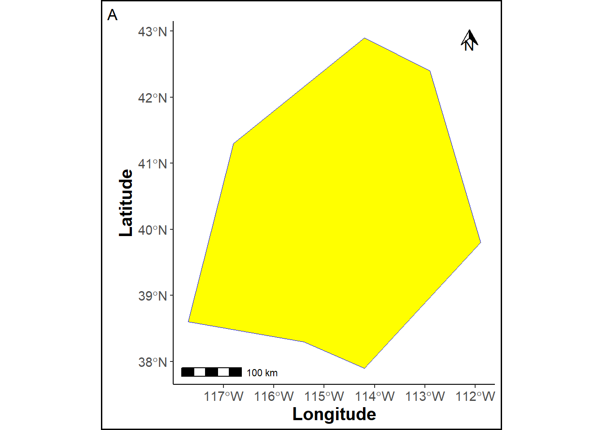
A gridded raster is generated within the study area, with red points overlaying the raster cells, and the polygon, raster, and points are visualized on a map.
ref_sp = raster(xmn = extent(pols)[1], xmx = extent(pols)[2], ymn = extent(pols)[3], ymx = extent(pols)[4], res = c(.5,.5))
crs(ref_sp) = crdref
pts = SpatialPoints(rasterToPoints(ref_sp))
pts_df=as.data.frame(pts)
names(pts_df) = c("Longitude", "Latitude")
values(ref_sp)= rep(0, ncell(ref_sp))
crs(pts) = crdref
ref_sp_df = cbind(xyFromCell(ref_sp, 1:ncell(ref_sp)), values(ref_sp))
ref_sp_df = as.data.frame(ref_sp_df)
names(ref_sp_df) = c("Longitude", "Latitude", "Class")
ref_sp_df$Class = as.factor(ref_sp_df$Class)
rasmap = ggplot(pols_sf) +
geom_sf(color = "blue", fill="yellow")+
geom_tile(data=ref_sp_df, aes(x=Longitude, y=Latitude, fill=Class), color="black", alpha=0)+
scale_fill_manual("", values = "white", guide="none", limits=force)+
geom_point(data = pts_df, aes(x=Longitude, y=Latitude), color="red")+
labs(tag="A'")+
annotation_scale(location = "br", text_cex = 0.5, pad_y = unit(0.15, "cm")) +
annotation_north_arrow(location = "tr", which_north= "true", height = unit(.5, "cm"),
width = unit(.5, "cm"), pad_x = unit(.5, "cm"))+ theme_cust
rasmap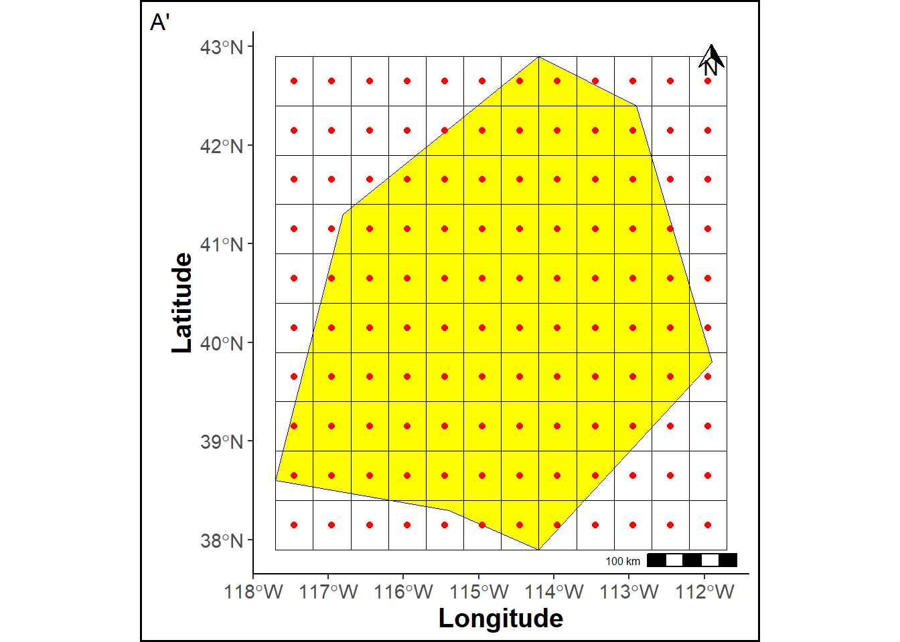
A reference map is created by assigning labels to each raster grid cell.
r = raster(xmn = extent(pols)[1], xmx = extent(pols)[2], ymn = extent(pols)[3], ymx = extent(pols)[4], res = c(1,1))
set.seed(12)
values(r)= sample(1:5, ncell(r), replace=T)
r2 = raster::disaggregate(r, fact=2)
# Put data in the raster
set.seed(1)
values(ref_sp)= values(r2)
# Mask raster
ref_sp_mask = mask(ref_sp, pols, updateNA=T)
ref_sp_mask_df = cbind(xyFromCell(ref_sp_mask, 1:ncell(ref_sp_mask)), values(ref_sp_mask))
ref_sp_mask_df = as.data.frame(ref_sp_mask_df)
names(ref_sp_mask_df) = c("Longitude", "Latitude", "Class")
ref_sp_mask_df$Class = as.factor(ref_sp_mask_df$Class)
pols_sf = st_as_sf(pols)
st_crs(pols_sf) = crdref
colab = c("1" = "#dee273",
"2" = "#dcbf64",
"3" = "#a5bfdd",
"4" = "#1f77b6",
"5" = "#02426d")
rmap = ggplot(pols_sf) +
geom_tile(data=ref_sp_mask_df, aes(x=Longitude, y=Latitude, fill=Class), linewidth=0.1, color="black")+
labs(title ="Reference map", tag="B")+
scale_fill_manual("Class", values = colab, na.value = "white", limits=force) +
geom_sf(color = "blue", fill=NA) +
annotation_scale(location = "br", text_cex = 0.5, pad_y = unit(0.05, "cm"),
height = unit(0.1, "cm")) +
annotation_north_arrow(location = "tr", which_north= "true", height = unit(.5, "cm"),
width = unit(.5, "cm"), pad_x = unit(.1, "cm"))+theme_cust
png("refmap.png")
print(rmap)
invisible(invisible(dev.off()))
rmap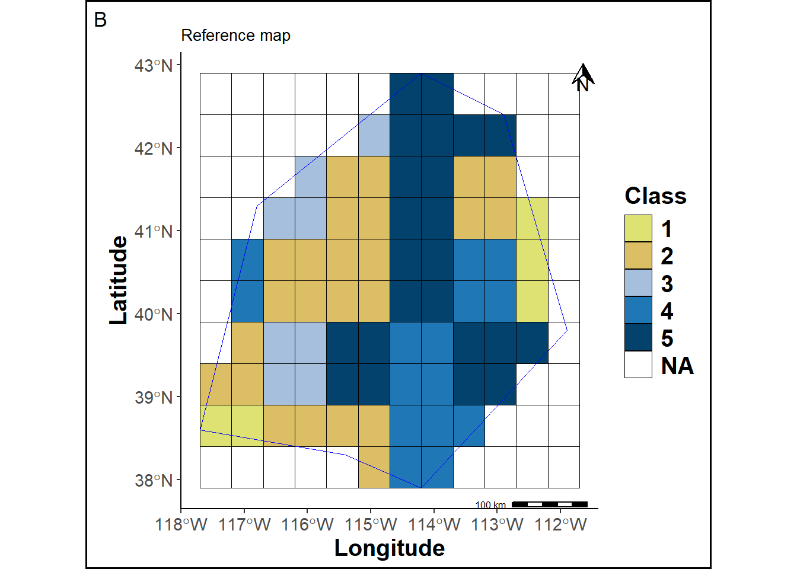
A prediction map is created by assigning labels to each raster grid cell for comparison.
pred_sp = r
pred_sp[[1]][c(9,17,21)] = c(5,1,4)
pred_sp_mask = mask(pred_sp, pols, updateNA=T)
pred_sp_mask_df = cbind(xyFromCell(pred_sp_mask, 1:ncell(pred_sp_mask)), values(pred_sp_mask))
pred_sp_mask_df = as.data.frame(pred_sp_mask_df)
names(pred_sp_mask_df) = c("Longitude", "Latitude", "Class")
pred_sp_mask_df$Class = as.factor(pred_sp_mask_df$Class)
pmap = ggplot(pols_sf) +
geom_tile(data=pred_sp_mask_df, aes(x=Longitude, y=Latitude, fill=Class), linewidth=0.1, color="black")+
scale_fill_manual("Class", values = colab, na.value = "white", limits=force) +
labs(title ="Prediction map", tag="C") +
geom_sf(color = "blue", fill=NA) +
annotation_scale(location = "br", text_cex = 0.5, pad_y = unit(0.05, "cm"),
height = unit(0.1, "cm")) +
annotation_north_arrow(location = "tr", which_north= "true", height = unit(.5, "cm"),
width = unit(.5, "cm"), pad_x = unit(.1, "cm"))+theme_cust
png("predmap.png")
print(pmap)
invisible(dev.off())
pmap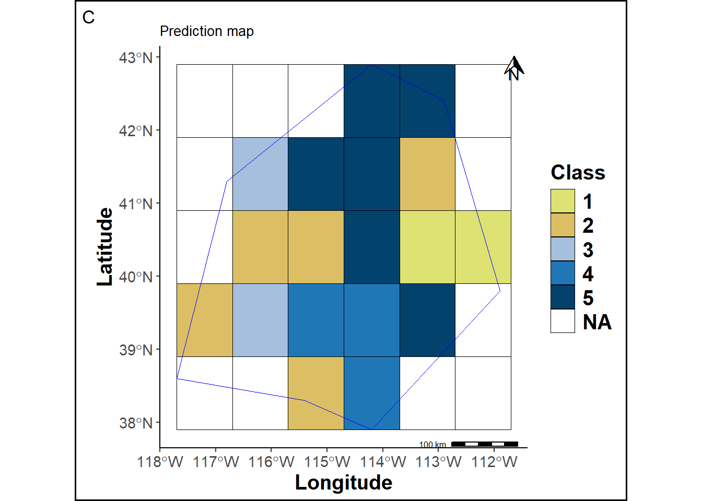
The prediction map cells are adjusted to match the cell size of the reference map.
pred_sp_dis = disagRast(pols, pred_sp_mask, ref_sp, crdref)
pred_sp_dis_df = cbind(xyFromCell(pred_sp_dis, 1:ncell(pred_sp_dis)), values(pred_sp_dis))
pred_sp_dis_df = as.data.frame(pred_sp_dis_df)
names(pred_sp_dis_df) = c("Longitude", "Latitude", "Class")
pred_sp_dis_df$Class = as.factor(pred_sp_dis_df$Class)
pmapdis = ggplot(pols_sf) +
geom_tile(data=pred_sp_dis_df, aes(x=Longitude, y=Latitude, fill=Class), linewidth=0.1, color="black")+
scale_fill_manual("Class", values = colab, na.value = "white", limits=force) +
labs(title ="Prediction map disaggregated", tag="D") +
geom_sf(color = "blue", fill=NA) +
annotation_scale(location = "br", text_cex = 0.5, pad_y = unit(0.05, "cm"),
height = unit(0.1, "cm")) +
annotation_north_arrow(location = "tr", which_north= "true", height = unit(.5, "cm"),
width = unit(.5, "cm"), pad_x = unit(.1, "cm"))+theme_cust
png("predismap.png")
print(pmapdis)
invisible(dev.off())
pmapdis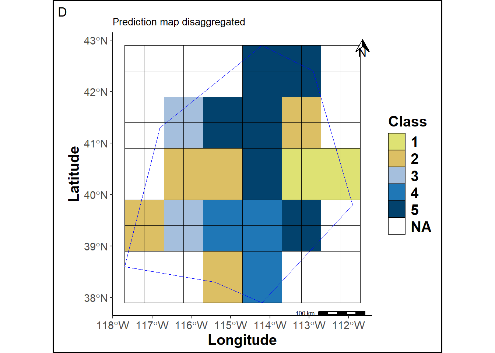
The prediction map cells are labeled according to their location in the grid.
ref_spbis=ref_sp
ref_spbis[is.na(ref_spbis)] = 999
# Cells outside the study area
outstudy = mask(ref_spbis, pols, updateNA=T)
status = statusProp(pred_sp_dis, ref_sp, outstudy[[1]], pols, 4326)
out_df = status[[1]]
inP_df = status[[2]]
inNP_df = status[[3]]
PropNL = status[[4]]
PropL = status[[5]]
allcells = rbind(out_df, inP_df, inNP_df)
names(allcells) = c("Longitude", "Latitude", "Class", "Location")
colab3 = c("Outside"="white", "Inside-P"="green", "Inside-Non-P"="orange")
lab3 = c("Outside"= "O", "Inside-P"="L", "Inside-Non-P"="NL")
statusmap = ggplot(pols_sf) +
geom_tile(data=allcells, aes(x=Longitude, y=Latitude, fill=Location), linewidth=0.1, color="black")+
scale_fill_manual("Status", values = colab3, labels = lab3, limits=force) +
labs(title ="Prediction map disaggregated marking", tag="E") +
geom_sf(color = "blue", fill=NA) +
annotation_scale(location = "br", text_cex = 0.5, pad_y = unit(0.05, "cm"),
height = unit(0.1, "cm")) +
annotation_north_arrow(location = "tr", which_north= "true", height = unit(.5, "cm"),
width = unit(.5, "cm"), pad_x = unit(.1, "cm"))+theme_cust
png("statusmap.png")
print(statusmap)
invisible(dev.off())
statusmap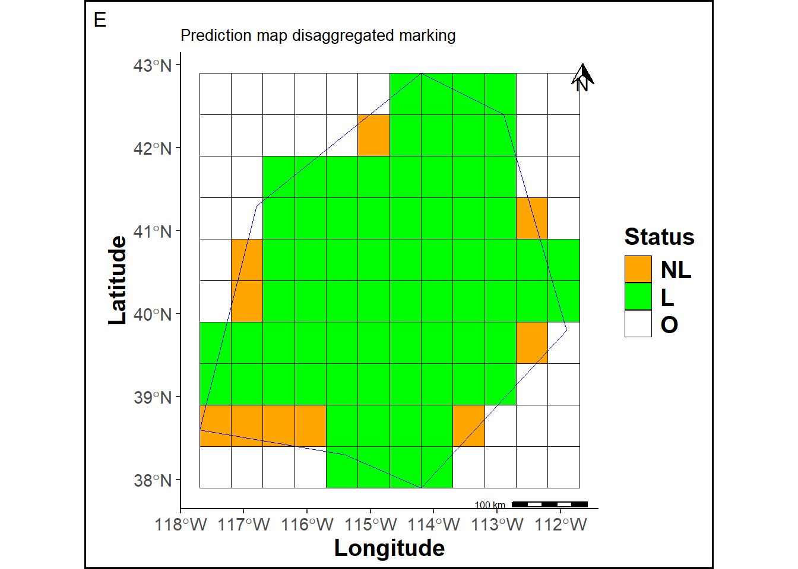
The disaggregation of the prediction map will generate borders effects.
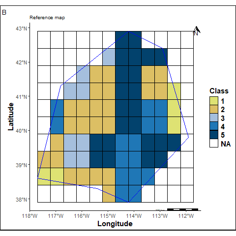
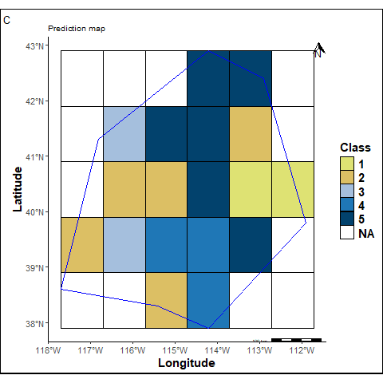
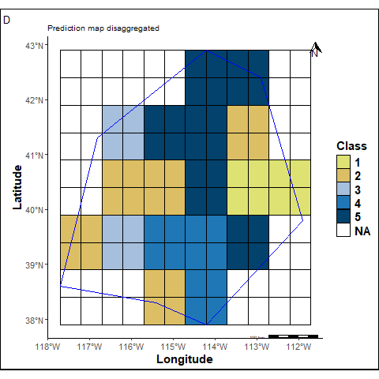
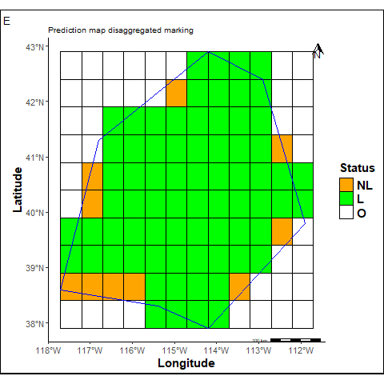
O = Cells outside the study area. We count 45 such cells.
L + NL = Marked cells from the original prediction map, totaling 82 cells.
L = Marked cells within the study area. We count 72 cells, which represents 0.88% of the total cells inside the study area.
NL = Unmarked (non-labeled) cells within the study area. We count 10 cells, corresponding to 0.12%.
The reference and the predicted maps are stacked to calculate the following “Match” and a “Balanced Match” scores.
The match sccore corresponds to the proportion of cells that are identical in the both maps. It is calculated as follows:
\[\begin{equation} Match \ (Yes) = \frac{N_{+}}{N_{+} + N_{-}} \end{equation}\]where \(N_{+}\) are cells which labels are similar in the two maps and \(N_{-}\) are cells which labels are different in the two maps.
matchstats = matchRast(pred_sp_dis, ref_sp_mask, precision=2, correct=F)
match = subset(matchstats[[1]][,], layer==1)[,3]
mismatch = subset(matchstats[[1]][,], layer==0)[,3]
comp_sp = cbind(xyFromCell(matchstats[[2]], 1:ncell(matchstats[[2]])), values(matchstats[[2]]))
comp_sp_df = as.data.frame(comp_sp)
names(comp_sp_df) = c("Longitude", "Latitude", "Class")
comp_sp_df$Class = as.factor(comp_sp_df$Class)
colab2 = c("1" = "seagreen", "0" = "yellow")
pmapcomp = ggplot(pols_sf) +
geom_tile(data=comp_sp_df, aes(x=Longitude, y=Latitude, fill=Class), linewidth=0.1, color="black")+
scale_fill_manual("Match", values = colab2, labels= c("1"=str_glue("Yes = {match}"), "0"= str_glue("No = {mismatch}")), na.value = NA, limits=force) +
new_scale_fill()+
geom_tile(data=subset(allcells, Location=="Inside-Non-P"), aes(x=Longitude, y=Latitude), fill="orange", linewidth=0.1, color="black")+
labs(title ="Non corrected Match", tag="F") +
geom_sf(color = "blue", fill=NA) +
annotation_scale(location = "br", text_cex = 0.5, pad_y = unit(0.05, "cm"),
height = unit(0.1, "cm")) +
annotation_north_arrow(location = "tr", which_north= "true", height = unit(.5, "cm"),
width = unit(.5, "cm"), pad_x = unit(.1, "cm"))+theme_cust
png("pmapcomp.png")
print(pmapcomp)
invisible(dev.off())
########################################################################
matchstats = matchRast(pred_sp_dis, ref_sp_mask, precision=2, correct=T)
match = subset(matchstats[[1]][,], layer==1)[,3]
mismatch = subset(matchstats[[1]][,], layer==0)[,3]
comp_sp_corr = cbind(xyFromCell(matchstats[[2]], 1:ncell(matchstats[[2]])), values(matchstats[[2]]))
comp_sp_corr_df = as.data.frame(comp_sp_corr)
names(comp_sp_corr_df) = c("Longitude", "Latitude", "Class")
comp_sp_corr_df$Class = as.factor(comp_sp_corr_df$Class)
colab2 = c("1" = "seagreen", "0" = "yellow")
pmapcompcorr = ggplot(pols_sf) +
geom_tile(data=comp_sp_corr_df, aes(x=Longitude, y=Latitude, fill=Class), linewidth=0.1, color="black")+
scale_fill_manual("Match", values = colab2, labels= c("1"=str_glue("Yes = {match}"), "0"= str_glue("No = {mismatch}")), na.value = NA, limits=force) +
labs(title ="Corrected Match ", tag="G") +
geom_sf(color = "blue", fill=NA) +
annotation_scale(location = "br", text_cex = 0.5, pad_y = unit(0.05, "cm"),
height = unit(0.1, "cm")) +
annotation_north_arrow(location = "tr", which_north= "true", height = unit(.5, "cm"),
width = unit(.5, "cm"), pad_x = unit(.1, "cm"))+theme_cust
png("pmapcompcorr.png")
print(pmapcompcorr)
invisible(dev.off())
#p3 <- ggarrange(rmap, pmapcomp, pmapdis, pmapcompcorr, ncol = 2, nrow = 2)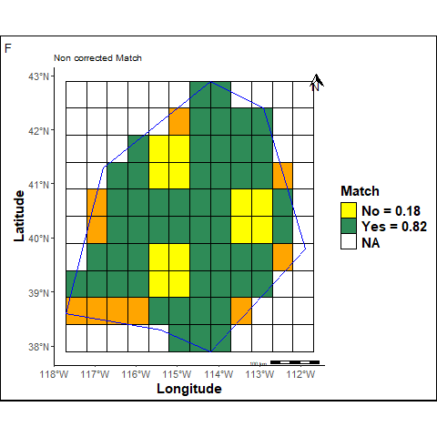
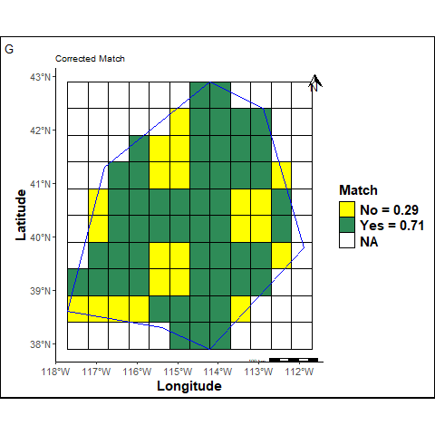
F: The Non corrected Match is calculated omitting unpredicted cells inside the study area (orange cells).
G: The Corrected Match is calculated considering unpredicted cells inside the study area as bad predictions.
The Balanced Match consists in the arithmetic mean of the recall of each class. Recall for each class answers the question “how likely will an individual of that class be classified correctly ?”. It is “balanced” because every class has the same weight and the same importance.
The non corrected balanced match takes into account only L cells inside the study area.
Reference
Prediction 1 2 3 4 5
1 2 0 0 4 0
2 0 18 0 0 0
3 0 0 7 0 0
4 0 0 0 8 4
5 0 4 0 0 18\(TP_{k}\) (True Positives): observations predicted to belong to the class \(k\) when then really do.
\(FN_{k}\) (False Negatives): observations predicted to not belong to the class \(k\) when they really do.
Class: 1 Class: 2 Class: 3 Class: 4 Class: 5
1.0000000 0.8181818 1.0000000 0.6666667 0.8181818 where \(K\) (the number of classes) = 5.
The corrected balanced match takes into account NL cells inside the study area as bad predictions.
\[\begin{equation} CBM_{1} = NCBM \times (1 - \% NL) = 0.76 \end{equation}\]The 99 class in the following confusion matrix corresponds to previous NL cells in the predicted map.
Reference
Prediction 1 2 3 4 5 99
1 2 0 0 4 0 0
2 0 18 0 0 0 0
3 0 0 7 0 0 0
4 0 0 0 8 4 0
5 0 4 0 0 18 0
99 3 2 1 3 1 0 Class: 1 Class: 2 Class: 3 Class: 4 Class: 5 Class: 99
0.4000000 0.7500000 0.8750000 0.5333333 0.7826087 NA By convention, the Recall of the impredictible class (99) is equal to 0.
\[\begin{equation} CBM_{2} = \frac{1}{K}\displaystyle \sum_{k \neq 99}^{K}Recall_{k} = 0.56 \end{equation}\]where \(K\) (the total number of classes) = 6.